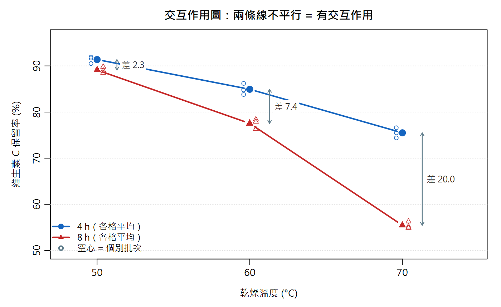
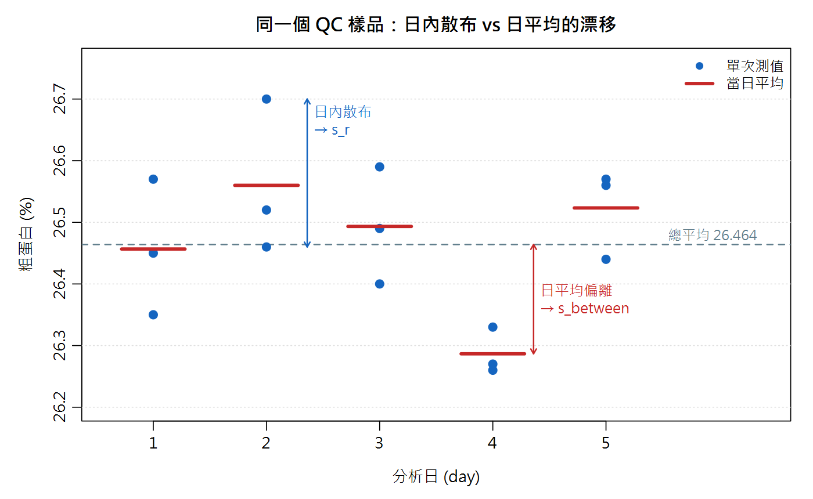
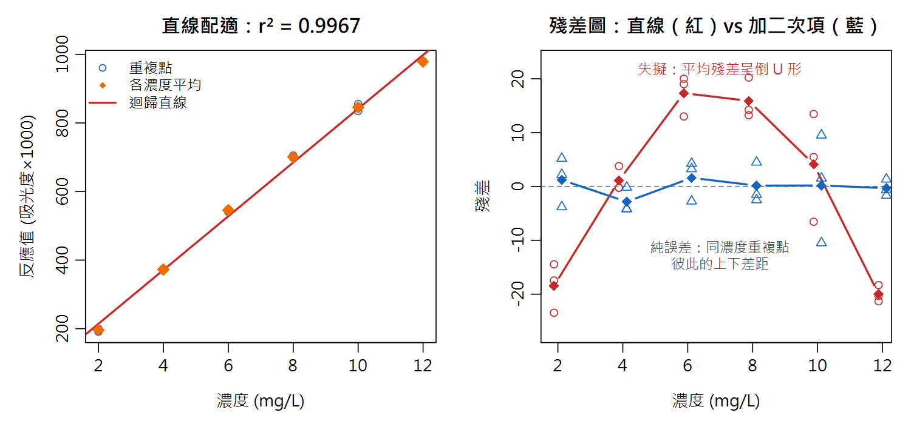
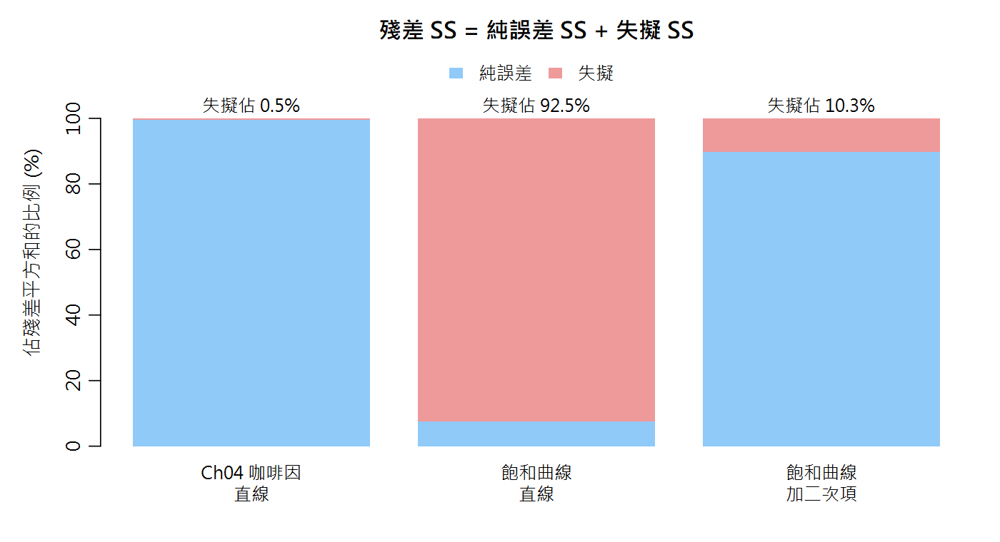

ANOVA 進階：雙因子、精密度分解與失擬檢定 Two-way ANOVA, Precision Decomposition & Lack-of-Fit
「溫度有影響嗎？」「時間有影響嗎？」——如果答案是「要看另一個因子設在哪裡」，單因子 ANOVA 就不夠用了。 同一張 ANOVA 表，還能回答另外兩個實驗室天天遇到的問題：「我的方法精密度到底多少？」「這條標準曲線真的是直線嗎？」
這一章不教新的數學，只是把「拆變異」這一招用在三個地方，接回本課程的三條主線：
| 這一章的工具 | 把變異拆成… | 接回哪一條主線 |
|---|---|---|
| A. 雙因子 ANOVA | 因子 1 ＋ 因子 2 ＋ 交互作用 ＋ 誤差 | 實驗設計（→ Ch14 DOE/RSM） |
| B. 精密度分解 | 日間 ＋ 日內 | 方法確效的精密度（Ch03 管制圖、Ch07 Type A、Ch08 預算表） |
| C. 失擬檢定 | 失擬 ＋ 純誤差 | 標準曲線（Ch04）與 RSM 模型（Ch14） |
名詞卡住了？回 Ch0 名詞圖鑑 查白話解釋與比喻。
- 會用
aov(y ~ A * B)做雙因子 ANOVA，並且先看交互作用再決定怎麼解讀主效應 - 會畫、會讀交互作用圖；知道不平衡設計時因子順序會改變 SS
- 會用區集設計（
y ~ 處理 + 區集）把樣品間差異扣掉，並看出它與 paired t 的關係（F = t²） - 會從單因子 ANOVA 表的 MS 算出重複性 sr、日間 sbetween、中間精密度 sI
- 會用
anova(直線模型, 各濃度平均模型)做失擬檢定，並說得出「為什麼沒有重複就不能做」
17.1 雙因子 ANOVA：兩個因子一起看
情境：熱風乾燥芭樂片。想知道乾燥溫度（50／60／70 °C）與乾燥時間（4／8 h）對維生素 C 保留率 (%) 的影響。 3 個溫度 × 2 個時間 = 6 種組合（統計上叫 6 個「格」，cell），每一格各做 3 個獨立批次，共 18 筆（教學模擬數據）：
| 溫度 | 4 h（三批） | 8 h（三批） |
|---|---|---|
| 50 °C | 90.5 91.9 91.7 | 88.5 89.8 89.0 |
| 60 °C | 83.8 86.2 84.8 | 77.9 76.3 78.4 |
| 70 °C | 75.5 76.6 74.4 | 54.9 56.3 55.2 |
為什麼不分開做兩次單因子 ANOVA（一次比溫度、一次比時間）？因為那樣永遠看不到「溫度和時間湊在一起會怎樣」——
而這往往才是製程上最重要的資訊。R 的寫法只比 Ch16 多一個 *：
y ~ temp * time 等於 y ~ temp + time + temp:time
temp、time＝兩個主效應；temp:time＝交互作用（冒號不是除號）
# ---------- A1. 資料與各格平均 ----------
vitc <- data.frame(
temp = factor(rep(rep(c(50, 60, 70), each = 3), times = 2)),
time = factor(rep(c(4, 8), each = 9)),
y = c(90.5, 91.9, 91.7, 83.8, 86.2, 84.8, 75.5, 76.6, 74.4, # 4 h
88.5, 89.8, 89.0, 77.9, 76.3, 78.4, 54.9, 56.3, 55.2)) # 8 h
# 注意：temp、time 一定要轉成 factor，否則 R 會把 50/60/70 當成連續數字配直線
cell_mean <- with(vitc, tapply(y, list(temp = temp, time = time), mean))
round(cell_mean, 2) # 3×2 的「各格平均」表：這是判讀的主角
# ---------- A2. 雙因子 ANOVA：temp * time = temp + time + temp:time ----------
fit_tw <- aov(y ~ temp * time, data = vitc)
summary(fit_tw)
# 讀表順序：先看最下面的交互作用 temp:time！
# 顯著 -> 「時間的影響」隨溫度而不同，主效應不能單獨解讀 (見 A4)
time
temp 4 8
50 91.37 89.10
60 84.93 77.53
70 75.50 55.47
Df Sum Sq Mean Sq F value Pr(>F)
temp 2 1883.3 941.6 1043.7 3.49e-14 ***
time 1 441.0 441.0 488.8 4.31e-11 ***
temp:time 2 250.8 125.4 139.0 5.02e-09 ***
Residuals 12 10.8 0.9
---
Signif. codes: 0 '***' 0.001 '**' 0.01 '*' 0.05 '.' 0.1 ' ' 1怎麼讀這張表？它比 Ch16 的表多了兩列，但每一列的讀法一模一樣（SS → 除以 Df 得 MS → 除以 Residuals 的 MS 得 F → p 值）：
| 列 | Df | F | 白話意思 |
|---|---|---|---|
| temp | 3−1 = 2 | 1043.7 | 把時間平均掉之後，三個溫度的平均有差嗎？ |
| time | 2−1 = 1 | 488.8 | 把溫度平均掉之後，4 h 與 8 h 的平均有差嗎？ |
| temp:time | 2×1 = 2 | 139.0 | 「時間造成的差距」在三個溫度下一樣大嗎？（p = 5×10⁻⁹ → 不一樣大！） |
| Residuals | 18−6 = 12 | — | 同一格內三批彼此的差異（MS = 0.9，即 s ≈ 0.95%） |
交互作用不顯著 → 兩個因子的效果可以各講各的，主效應才有簡單的解讀。
17.2 交互作用圖：線不平行，就不能只講主效應
把 6 個格平均畫出來（x 軸放一個因子，另一個因子用不同的線）。R 內建 interaction.plot()，Ch14 已經用過：

# ---------- A3. 交互作用圖：線不平行 = 有交互作用 ----------
with(vitc, interaction.plot(temp, time, y, type = "b", pch = c(19, 17),
col = c("#1565C0", "#C62828"), lwd = 2,
xlab = "乾燥溫度 (°C)", ylab = "維生素 C 保留率 (%)",
trace.label = "時間 (h)"))
# ---------- A4. 交互作用顯著時：改看 simple effects（各溫度下時間的效應）----------
drop_by_time <- cell_mean[, "4"] - cell_mean[, "8"] # 每個溫度下：4 h -> 8 h 掉了多少
round(drop_by_time, 2)
round(mean(drop_by_time), 2) # 「時間主效應」= 三個溫度的平均，誰都不代表
# 用 ANOVA 的共同誤差 MSE 給每個差值一個 95% CI 半寬：t × sqrt(2·MSE/n)
MSE_tw <- summary(fit_tw)[[1]]["Residuals", "Mean Sq"]
round(qt(0.975, df = 12) * sqrt(2 * MSE_tw / 3), 2)
50 60 70 2.27 7.40 20.03 [1] 9.9 [1] 1.69
如果只報告「時間的主效應」，你會說：「8 h 比 4 h 平均少 9.9 個百分點。」 但這個 9.9 是 2.27、7.40、20.03 三個數字的平均——沒有任何一個溫度的實際情況是 9.9。 在 50 °C 操作的人會被嚇到（其實只掉 2.3），在 70 °C 操作的人會被誤導（其實掉了 20）。
50 °C：−2.3 ｜ 60 °C：−7.4 ｜ 70 °C：−20.0（百分點；每個差值的 95% 信賴區間半寬約 ±1.69，用 ANOVA 的共同 MSE 計算）。
結論可以寫成：「高溫會放大長時間乾燥對維生素 C 的破壞；若要乾 8 h，溫度應壓在 50 °C。」
要對 6 個格做正式的兩兩比較，可用 Ch16 學過的
TukeyHSD(fit_tw, "temp:time")。17.3 平衡 vs 不平衡：少一筆資料，因子順序就有差
每一格的重複數都相同叫平衡設計 (balanced)。假設 70 °C／8 h 的最後一批打翻了，只剩 17 筆：
# ---------- A5. 不平衡設計：aov() 的 Type I (循序) SS 會受因子順序影響 ---------- vitc_unbal <- vitc[-18, ] # 假設最後一批樣品打翻了 -> 70°C/8h 只剩 2 筆 ss <- function(fit) round(summary(fit)[[1]][, "Sum Sq", drop = FALSE], 2) ss(aov(y ~ temp * time, data = vitc_unbal)) # 先放 temp ss(aov(y ~ time * temp, data = vitc_unbal)) # 先放 time -> temp、time 的 SS 變了 # 平衡設計 (每格 n 相同) 沒有這個問題： ss(aov(y ~ time * temp, data = vitc)) # 與 A2 的 SS 完全相同
Sum Sq
temp 1411.23
time 350.72
temp:time 214.34
Residuals 10.72
Sum Sq
time 241.16
temp 1520.79
time:temp 214.34
Residuals 10.72
Sum Sq
time 441.05
temp 1883.25
time:temp 250.80
Residuals 10.83同一份 17 筆資料，只是把公式裡的因子對調順序，temp 的 SS 就從 1411.23 變成 1520.79、time 從 350.72 變成 241.16
（交互作用與 Residuals 不變）。原因：aov() 用的是循序平方和 (Type I SS)——
排第一的因子先「吃」掉它能解釋的變異，第二個因子只能分剩下的。平衡設計時兩個因子互不重疊，誰先吃都一樣（最後一段輸出與 17.1 完全相同）；不平衡時就會互搶。
Anova()），本課程不展開。17.4 每格只有一筆：隨機區集設計，以及它和 paired t 的關係
情境：想知道 3 位分析員（A、B、C）測粗脂肪有沒有系統性差異。拿 5 個乳製品樣品，每人每個樣品各測一次。 樣品的脂肪含量從 3% 到 8% 差很多——這個差異不是我們要研究的，但它會製造一大堆變異。 做法：把「樣品」也放進模型，當成區集 (block)，把它造成的變異先扣掉。
# ---------- A6. 無重複的雙因子：隨機區集設計 (block) ----------
# 5 個乳製品樣品 (粗脂肪 %)，3 位分析員各測一次。樣品 = 區集 (block)
fat <- data.frame(
sample = factor(rep(1:5, times = 3)),
analyst = factor(rep(c("A", "B", "C"), each = 5)),
y = c(3.14, 4.11, 5.66, 6.73, 8.36, # 分析員 A
3.32, 4.10, 5.75, 7.05, 8.44, # 分析員 B
3.18, 3.92, 5.55, 6.84, 8.30)) # 分析員 C
summary(aov(y ~ analyst, data = fat)) # 錯誤示範：忽略區集
summary(aov(y ~ analyst + sample, data = fat)) # 正確：把樣品差異「扣掉」
# 每格只有 1 筆 -> 沒有自由度估交互作用，所以模型用「+」不用「*」
# 只比兩位分析員 (A vs B) 時，區集 ANOVA 的 F 就是 paired t 的平方 (Ch15)
fat_AB <- droplevels(subset(fat, analyst != "C"))
summary(aov(y ~ analyst + sample, data = fat_AB))
tt <- t.test(fat$y[fat$analyst == "A"], fat$y[fat$analyst == "B"], paired = TRUE)
round(c(t = unname(tt$statistic), t_squared = unname(tt$statistic)^2,
p = tt$p.value), 4)
Df Sum Sq Mean Sq F value Pr(>F)
analyst 2 0.08 0.041 0.009 0.991
Residuals 12 52.22 4.352
Df Sum Sq Mean Sq F value Pr(>F)
analyst 2 0.08 0.041 8.025 0.0122 *
sample 4 52.18 13.045 2539.617 1.92e-12 ***
Residuals 8 0.04 0.005
---
Signif. codes: 0 '***' 0.001 '**' 0.01 '*' 0.05 '.' 0.1 ' ' 1
Df Sum Sq Mean Sq F value Pr(>F)
analyst 1 0.04 0.044 5.595 0.0772 .
sample 4 34.69 8.673 1114.019 2.41e-06 ***
Residuals 4 0.03 0.008
---
Signif. codes: 0 '***' 0.001 '**' 0.01 '*' 0.05 '.' 0.1 ' ' 1
t t_squared p
-2.3655 5.5954 0.0772 - 忽略區集（第一張表）：analyst 的 p = 0.991，「完全沒差」。因為樣品之間 3%～8% 的巨大差異全被算進 Residuals（MS = 4.352），分析員之間零點幾的差異被淹沒了。
- 放入區集（第二張表）：樣品的變異（SS = 52.18）被獨立成一列，Residuals 的 MS 從 4.352 降到 0.005，analyst 的 p 變成 0.0122——分析員之間其實有差。
- 每格只有 1 筆，沒有多餘的自由度去估交互作用，所以公式用
+不用*（等於假設「分析員的偏差不隨樣品改變」）。
17.5 用 ANOVA 分解精密度：重複性 vs 中間精密度
方法確效要報告精密度。但「精密度」不只一種——ISO 5725 依「重做時換了多少條件」分層：
| 名稱 | 符號 | 重做時的條件 | 白話 |
|---|---|---|---|
| 重複性 repeatability | sr | 同一天、同一人、同一台儀器、短時間內 | 「手很穩的那一天」的散布 |
| 中間精密度 intermediate precision | sI | 同一實驗室，但跨不同天（或不同人、不同批試劑） | 「這間實驗室長期」的散布 |
| 再現性 reproducibility | sR | 不同實驗室 | 需要多實驗室共同試驗才能估（HorRat 值就是拿 RSDR 與 Horwitz 預測值相比）；本章不展開 |
情境：同一罐奶粉 QC 樣品，用凱氏法測粗蛋白 (%)，連續 5 天、每天 3 重複（每次都從秤樣開始整個重做）：

這正是單因子 ANOVA 的結構：「天」是因子，MSwithin 量日內、MSbetween 量日間。關鍵在於 MSbetween 的成分：
sr = \(\sqrt{MS_{within}}\) sbetween² = MSbetween − MSwithinn sI = \(\sqrt{s_r^2 + s_{between}^2}\) 日平均的起伏裡本來就混有日內雜訊（每個日平均帶著 σr²/n），所以要先減掉 MSwithin，再除以 n，才是「純的」日間變異
# ---------- B1. 資料與單因子 ANOVA ----------
qc <- data.frame(
day = factor(rep(1:5, each = 3)),
y = c(26.45, 26.35, 26.57, # day 1
26.52, 26.46, 26.70, # day 2
26.40, 26.49, 26.59, # day 3
26.27, 26.26, 26.33, # day 4
26.57, 26.56, 26.44)) # day 5
round(tapply(qc$y, qc$day, mean), 3) # 每天的平均
fit_qc <- aov(y ~ day, data = qc)
summary(fit_qc)
# ---------- B2. 由 MS 拆出三個標準差 ----------
tab <- summary(fit_qc)[[1]]
MS_b <- tab["day", "Mean Sq"] # 日間 (between-day) 均方
MS_w <- tab["Residuals", "Mean Sq"] # 日內 (within-day) 均方
n <- 3 # 每天重複數
s_r <- sqrt(MS_w) # 重複性標準差 repeatability
s_between <- sqrt(max(0, (MS_b - MS_w) / n)) # 日間標準差；負值取 0
s_I <- sqrt(s_r^2 + s_between^2) # 中間精密度 intermediate precision
round(c(MS_between = MS_b, MS_within = MS_w), 5)
round(c(s_r = s_r, s_between = s_between, s_I = s_I), 4)
round(100 * c(RSD_r = s_r, RSD_I = s_I) / mean(qc$y), 2) # 換成 RSD (%)
1 2 3 4 5
26.457 26.560 26.493 26.287 26.523
Df Sum Sq Mean Sq F value Pr(>F)
day 4 0.13529 0.03382 3.894 0.037 *
Residuals 10 0.08687 0.00869
---
Signif. codes: 0 '***' 0.001 '**' 0.01 '*' 0.05 '.' 0.1 ' ' 1
MS_between MS_within
0.03382 0.00869
s_r s_between s_I
0.0932 0.0915 0.1306
RSD_r RSD_I
0.35 0.49 手算對照：sr = \(\sqrt{0.00869}\) = 0.0932；
sbetween² = (0.03382 − 0.00869)/3 = 0.00838 → sbetween = 0.0915；
sI = \(\sqrt{0.00869 + 0.00838}\) = 0.1306。換成相對標準差：RSDr = 0.35%、RSDI = 0.49%。
這裡 F 檢定的 p = 0.037 只是告訴你「日間差異不是零」；方法確效要的是 sr 與 sI 這兩個數字本身，不是那個 p 值。
17.6 三個常見的錯誤捷徑，與它們的後果
# ---------- B3. 對照：把 15 筆直接丟進 sd() ----------
round(sd(qc$y), 4)
# 既不是 s_r 也不是 s_I：它是 sqrt[(4·MS_b + 10·MS_w)/14]，兩種變異「混在一起」
round(sqrt((4 * MS_b + 10 * MS_w) / 14), 4)
# ---------- B4. 回扣 Ch07 Type A：「當天 3 重複的平均」不確定度是多少？ ----------
round(c(naive_same_day = s_r / sqrt(3), # 只用當天重複 -> 低估
correct = sqrt(s_between^2 + s_r^2 / 3)), 4)
# 日間變異不會因為「同一天多測幾次」而變小
[1] 0.126
[1] 0.126
naive_same_day correct
0.0538 0.1062 | 你拿到的數字 | 數值 | 它其實是什麼 |
|---|---|---|
| sr（只在同一天重複） | 0.0932 | 只有日內。拿來代表長期表現會太樂觀 |
sd() 直接算 15 筆 | 0.1260 | \(\sqrt{(4\,MS_{between} + 10\,MS_{within})/14}\)：日間、日內依「自由度」混在一起的大雜燴。 既不是 sr，也不是 sI；而且拆不開——你無法從它算出「當日 3 重複平均」的不確定度 |
| sI（ANOVA 分解） | 0.1306 | 「隨便哪一天、做一次」的標準差 = 例行檢驗單次結果該用的精密度 |
本例 0.1260 與 0.1306 看起來差不多，是因為每天只有 3 重複。每天重複數越多，sd() 全丟的結果會被日內數據「稀釋」得越厲害、越低估 sI。
✗ 只用當天 3 重複：u = sr/\(\sqrt{3}\) = 0.0538
✓ 把日間變異算進來：u = \(\sqrt{s_{between}^2 + s_r^2/3}\) = 0.1062（大了將近一倍）
同一天多測幾次，只能把 sr²/n 那一項壓小；sbetween² 那一項一點都不會變。 要讓日間變異也被平均掉，只能分散在不同天測。
Ch08 不確定度預算表：預算表中的「精密度」分量，建議填由中間精密度得到的值（如上面的 0.1062 或 sI）， 它已經把天平、滴定、環境等日常隨機變動一次打包，不必再逐項拆開重複計算。
17.7 sbetween² 算出負值？不是你算錯
# ---------- B5. s_between^2 算出負值怎麼辦？ ----------
# 另一個 QC 樣品 (粗脂肪 %)：日與日之間其實沒什麼差別
qc2 <- data.frame(
day = factor(rep(1:5, each = 3)),
y = c(3.52, 3.41, 3.49, 3.44, 3.55, 3.47, 3.50, 3.43, 3.53,
3.46, 3.54, 3.42, 3.51, 3.45, 3.48))
tab2 <- summary(aov(y ~ day, data = qc2))[[1]]
round(c(MS_between = tab2["day", "Mean Sq"],
MS_within = tab2["Residuals", "Mean Sq"]), 5)
round((tab2["day", "Mean Sq"] - tab2["Residuals", "Mean Sq"]) / 3, 5) # 負的！
# 不是算錯：日間變異很小時，MS_between 只是碰巧比 MS_within 小
# 慣例：s_between = 0，此時 s_I = s_r
round(sqrt(tab2["Residuals", "Mean Sq"]), 4)
MS_between MS_within 0.00013 0.00275 [1] -0.00087 [1] 0.0524
這個粗脂肪 QC 樣品的 MSbetween（0.00013）比 MSwithin（0.00275）還小，代公式得到 −0.00087。變異數怎麼可能是負的？
回想 MSbetween 估計的是 σr² + n·σbetween²。當真正的日間變異很小（接近 0）時，MSbetween 和 MSwithin 其實在估同一個東西；
兩個都是帶有抽樣誤差的估計值（這裡自由度才 4 和 10），誰大誰小純看運氣，相減出現負值很正常。
慣例（ISO 5725）：負值時取 sbetween = 0，於是 sI = sr = 0.0524。
不要取絕對值，也不要以為「隔天做會更精密」。
17.8 失擬檢定：這條線的「形狀」對嗎？
Ch04 警告過：r 高不等於直線，要看殘差圖。但看圖是主觀的——有沒有客觀的檢定？ 有，前提是每個濃度要有獨立重複。想法仍然是「拆變異」，這次拆的是直線模型的殘差：
F = SS失擬 / (m − p)SS純誤差 / (N − m) N＝總點數、m＝不同濃度數、p＝模型參數個數（直線 p = 2）。純誤差與模型無關，是「就算模型完美也躲不掉的雜訊」；失擬若明顯大於它，就是模型形狀有問題
R 的做法是比較兩個模型：lm(area ~ conc)（直線，2 個參數）對上 lm(area ~ factor(conc))（把濃度當類別，每個濃度各給一個平均——
這是「形狀完全自由」的模型，它的殘差就是純誤差）。資料直接重用 Ch04 第 7 節那組 5 濃度 × 3 重複的咖啡因標準曲線：
# ---------- C1. Ch04 的 HPLC 咖啡因標準曲線 (5 濃度 × 3 重複) ----------
# 數值出處：R/ch04_regression.R 第 7 節 (WLS 範例)，原樣複製
conc <- rep(c(1, 5, 10, 50, 100), each = 3)
area <- c(101, 99, 102,
498, 505, 492,
1005, 992, 1018,
4930, 5070, 5005,
9720, 10380, 10040)
fit_line <- lm(area ~ conc) # 直線模型：2 個參數
fit_cell <- lm(area ~ factor(conc)) # 「每個濃度各給一個平均」：5 個參數
round(summary(fit_line)$r.squared, 5)
anova(fit_line, fit_cell) # 第 2 列就是失擬檢定
# 手算對照：殘差 SS = 純誤差 SS + 失擬 SS
SS_res <- sum(residuals(fit_line)^2)
SS_pe <- sum((area - ave(area, conc))^2) # 重複點離「自己濃度平均」多遠
SS_lof <- SS_res - SS_pe # 各濃度平均離「直線」多遠
df_pe <- length(area) - 5 # N - 濃度數 = 15 - 5
df_lof <- 5 - 2 # 濃度數 - 直線參數數
F_lof <- (SS_lof / df_lof) / (SS_pe / df_pe)
round(c(SS_res = SS_res, SS_pe = SS_pe, SS_lof = SS_lof), 1)
round(c(F = F_lof, p = pf(F_lof, df_lof, df_pe, lower.tail = FALSE)), 4)
# 提醒：這組資料高濃度的散布明顯較大 (Ch04 用它示範加權)。
# 同樣的兩模型比較也可以帶權重做：
w <- 1 / conc^2
anova(lm(area ~ conc, weights = w), lm(area ~ factor(conc), weights = w))
[1] 0.99894
Analysis of Variance Table
Model 1: area ~ conc
Model 2: area ~ factor(conc)
Res.Df RSS Df Sum of Sq F Pr(>F)
1 13 229159
2 10 228111 3 1048.1 0.0153 0.9972
SS_res SS_pe SS_lof
229158.7 228110.7 1048.1
F p
0.0153 0.9972
Analysis of Variance Table
Model 1: area ~ conc
Model 2: area ~ factor(conc)
Res.Df RSS Df Sum of Sq F Pr(>F)
1 13 38.764
2 10 37.147 3 1.6174 0.1451 0.9305判讀：anova() 輸出的第 2 列就是失擬檢定。RSS 第 1 列 229159 = 直線的殘差 SS；第 2 列 228111 = 純誤差 SS；
兩者相減 1048.1 = 失擬 SS（手算完全一致）。F = 0.0153、p = 0.997 → 沒有失擬的證據，直線模型可以接受。
另外，p 大只代表「以目前的重複數沒偵測到失擬」，不是「證明了線性」（Ch15：不拒絕 H₀ ≠ 證明 H₀）。 補充：這組資料高濃度的散布明顯較大（Ch04 用它示範加權迴歸），純誤差被 100 ppm 那三點撐大，所以 F 特別小； 帶上 1/x² 權重重做（上面最後一段輸出），F = 0.145、p = 0.93，結論相同。
17.9 r² > 0.99，但失擬顯著：高濃度飽和的曲線
換一組分光光度法的標準曲線（6 濃度 × 3 重複），高濃度端開始飽和、微微下彎：
# ---------- C2. r^2 很高但其實是彎的：高濃度飽和的標準曲線 ----------
# 分光光度法，6 濃度 (mg/L) × 3 重複，反應值 = 吸光度 × 1000
conc2 <- rep(c(2, 4, 6, 8, 10, 12), each = 3)
resp2 <- c(197, 191, 200, 371, 375, 371, 541, 548, 547,
705, 698, 699, 847, 835, 855, 977, 980, 978)
fit_l2 <- lm(resp2 ~ conc2)
fit_c2 <- lm(resp2 ~ factor(conc2))
round(summary(fit_l2)$r.squared, 4) # r^2 > 0.99，看起來「很直」
anova(fit_l2, fit_c2) # 失擬極顯著 -> 直線模型不對
round(tapply(residuals(fit_l2), conc2, mean), 1) # 殘差：負 -> 正 -> 負 (倒 U)
fit_q2 <- lm(resp2 ~ conc2 + I(conc2^2)) # 加二次項
anova(fit_q2, fit_c2) # 失擬不顯著 -> 二次模型足夠
# ---------- C3. 沒有重複就沒有純誤差 ----------
one_each <- !duplicated(conc2) # 每個濃度只留第 1 筆
fit_l3 <- lm(resp2[one_each] ~ conc2[one_each])
fit_c3 <- lm(resp2[one_each] ~ factor(conc2[one_each]))
round(summary(fit_l3)$r.squared, 4)
df.residual(fit_c3) # 純誤差自由度 = 0 -> F 的分母不存在
# anova(fit_l3, fit_c3) 只會給 NA：沒有重複 = 無法做失擬檢定
[1] 0.9967
Analysis of Variance Table
Model 1: resp2 ~ conc2
Model 2: resp2 ~ factor(conc2)
Res.Df RSS Df Sum of Sq F Pr(>F)
1 16 4251.0
2 12 317.3 4 3933.7 37.188 1.134e-06 ***
---
Signif. codes: 0 '***' 0.001 '**' 0.01 '*' 0.05 '.' 0.1 ' ' 1
2 4 6 8 10 12
-18.5 1.1 17.3 15.9 4.1 -20.0
Analysis of Variance Table
Model 1: resp2 ~ conc2 + I(conc2^2)
Model 2: resp2 ~ factor(conc2)
Res.Df RSS Df Sum of Sq F Pr(>F)
1 15 353.89
2 12 317.33 3 36.555 0.4608 0.7148
[1] 0.9968
[1] 0
- 直線：r² = 0.9967（r = 0.998，超過 Ch04 的「r ≥ 0.997」經驗門檻！），但失擬 F = 37.19、p = 1.1×10⁻⁶ → 直線模型不對。
- 各濃度的平均殘差 −18.5、1.1、17.3、15.9、4.1、−20.0：有系統的「負→正→負」，不是隨機散布。直線在兩端「跑到數據上方」、中段「落在數據下方」，所以用它反推濃度時，兩端的樣品會被低估、中段會被高估。
- 加二次項
I(conc2^2)：失擬 F = 0.46、p = 0.71 → 二次模型足以描述這組資料（或者，縮小工作範圍到線性區也是合理做法）。

這就是為什麼方法確效文件會要求標準曲線每個濃度至少 2–3 個獨立配製的重複：沒有它們，你只能「看殘差圖猜」，無法檢定線性。 （再次提醒：同一瓶標準液重複注射不算獨立重複，那只量到進樣的重複性，會低估純誤差、讓失擬虛假地顯著。）
17.10 銜接 Ch14：CCD 的 6 個中心點，就是為了這個
下一章（Ch14）的中心複合設計有 20 個 run，其中 6 個是一模一樣的中心點。乍看很浪費——現在你知道原因了：
整個設計裡只有中心點有重複，純誤差全靠它們（df = 6 − 1 = 5）。有了純誤差，才能檢定「二階模型夠不夠」。
以下數值取自 R/ch14_doe_rsm.R 的 CCD 資料：
# ---------- C4. 銜接 Ch14：CCD 的 6 個中心點就是純誤差的來源 ----------
# 數值出處：R/ch14_doe_rsm.R Part 2 (set.seed(15) 產生的 20 個 run)，原樣重建
alpha <- 2^(3/4) # 1.682
ccd <- data.frame(
A = c(-1, 1, -1, 1, -1, 1, -1, 1, -alpha, alpha, 0, 0, 0, 0, rep(0, 6)),
B = c(-1, -1, 1, 1, -1, -1, 1, 1, 0, 0, -alpha, alpha, 0, 0, rep(0, 6)),
C = c(-1, -1, -1, -1, 1, 1, 1, 1, 0, 0, 0, 0, -alpha, alpha, rep(0, 6)),
y = c(34.8, 41.7, 35.1, 51.6, 39.1, 42.0, 39.5, 55.8, # 因子點
31.6, 47.3, 41.8, 50.5, 39.9, 44.9, # 軸點
61.8, 60.0, 60.0, 60.0, 58.6, 59.4)) # 中心點 ×6
ccd$pt <- factor(paste(ccd$A, ccd$B, ccd$C)) # 15 個不同的設計點
fit1_ccd <- lm(y ~ (A + B + C)^2, data = ccd) # 一階+交互
fit2_ccd <- lm(y ~ (A + B + C)^2 + I(A^2) + I(B^2) + I(C^2), data = ccd) # 二階
fit_pt <- lm(y ~ pt, data = ccd) # 每點一個平均
round(sd(ccd$y[15:20]), 3) # 中心點的 s = 純誤差標準差 (df = 5)
anova(fit1_ccd, fit_pt) # 一階模型：失擬顯著 (曲面是彎的)
anova(fit2_ccd, fit_pt) # 二階模型：失擬不顯著 -> 可以拿去找駐點
[1] 1.054 Analysis of Variance Table Model 1: y ~ (A + B + C)^2 Model 2: y ~ pt Res.Df RSS Df Sum of Sq F Pr(>F) 1 13 1329.93 2 5 5.55 8 1324.4 149.05 1.612e-05 *** --- Signif. codes: 0 '***' 0.001 '**' 0.01 '*' 0.05 '.' 0.1 ' ' 1 Analysis of Variance Table Model 1: y ~ (A + B + C)^2 + I(A^2) + I(B^2) + I(C^2) Model 2: y ~ pt Res.Df RSS Df Sum of Sq F Pr(>F) 1 10 11.8054 2 5 5.5533 5 6.2521 1.1258 0.4498
- 20 個 run 只有 15 個不同的設計點 → 純誤差 df = 20 − 15 = 5，SS = 5.55（正好是 6 個中心點的 s = 1.054 平方後乘以 5）。
- 一階＋交互作用模型（7 個參數）：失擬 F = 149、p = 1.6×10⁻⁵ → 嚴重失擬。這和 Ch14 的「曲率檢定」是同一件事的兩種問法：曲面是彎的，平面模型不夠。
- 二階模型（10 個參數）：失擬 F = 1.13、p = 0.45 → 沒有失擬的證據，可以放心拿這個模型去找駐點、畫等高線。
✗ 把重複注射（或同一批取 3 份）當成 n = 3 的獨立重複 → 偽重複；誤差被低估，F 虛高、失擬假顯著、精密度太樂觀。
✗ 把全部數據丟進 sd() 就是中間精密度 → 那是日間與日內依自由度混合的值，不等於 sI，也拆不出 sr。
✗ sbetween² 算出負的，一定是算錯 → 日間變異很小時的正常抽樣現象；取 0，sI = sr。
✗ r² 很高，所以是線性 → 17.9 的例子 r² = 0.9967 而失擬 p ≈ 10⁻⁶。r² 量的是「貼不貼」，不是「直不直」。
✗ 沒有重複也能檢定失擬 → 沒有重複就沒有純誤差，F 沒有分母。
✗ 不平衡設計，因子順序無所謂 →
aov() 是循序 SS，順序一換主效應的 SS 與 p 值就變。📊 Excel 也會算：雙因子 ANOVA、精密度分解、失擬
① 雙因子 ANOVA（有重複）：工具選「雙因子變異數分析：重複試驗」。資料要排成下面的樣子——第一欄是列因子的標籤、第一列是欄因子的標籤， 每個溫度佔 3 列（=每格重複數），輸入範圍要包含標籤，「每一樣本的列數」填 3：
| 4h | 8h | |
|---|---|---|
| 50 | 90.5 | 88.5 |
| 91.9 | 89.8 | |
| 91.7 | 89.0 | |
| 60 | 83.8 | 77.9 |
| …（60、70 °C 依此類推，共 9 列數據） | ||
② 區集設計（每格一筆）：工具選「雙因子變異數分析：無重複試驗」，列放樣品、欄放分析員；「列」= sample、「欄」= analyst、「錯誤」= Residuals。
③ 精密度分解：5 天的數據放成 5 欄（每欄 3 筆），工具選「單因子變異數分析」，從輸出表讀「組間 MS」與「組內 MS」，再手算：
| 任務 | Excel 公式 | 本例結果 |
|---|---|---|
| 重複性 sr | =SQRT(組內MS) | 0.0932 |
| 日間 sbetween | =SQRT(MAX(0,(組間MS-組內MS)/3)) | 0.0915（MAX 處理負值；3 = 每天重複數） |
| 中間精密度 sI | =SQRT(SUMSQ(s_r, s_between)) | 0.1306 |
| （對照）全部丟進去 | =STDEV.S(全部15格) | 0.1260 ≠ sI |
| 任務 | Excel 公式 | 說明 |
|---|---|---|
| 殘差 SS | =DEVSQ(B1:B15)*(1-RSQ(B1:B15,A1:A15)) | 或「資料分析 → 迴歸」輸出的殘差 SS → 229159 |
| 純誤差 SS | =DEVSQ(B1:B3)+DEVSQ(B4:B6)+… | 每個濃度各算一次 DEVSQ 再相加 → 228111 |
| 失擬 SS | =殘差SS-純誤差SS | 1048.1 |
| F | =(失擬SS/3)/(純誤差SS/10) | df：5−2 = 3；15−5 = 10 |
| p 值 | =F.DIST.RT(F,3,10) | 0.997 |